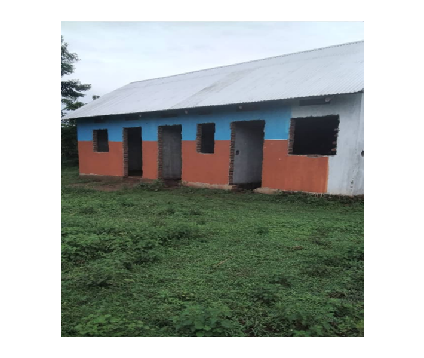

Welcome to Nawankwale C/U Community Health Centre — a lifeline of hope, healing, and care for the people of Nabitende Sub county, Iganga District, in the heart of Busoga Region, Uganda. Together with the community, we are building a healthier future, one step at a time.
Nawankwale C/U Community Health Centre is a grassroots initiative located in Nabitende Sub county, Iganga District, Busoga Region, Uganda. Our mission is to provide affordable, accessible, and compassionate healthcare services to underserved communities.
The health Centre began as a community-driven project, relying heavily on local support to build a three-room structure. We have reached the shell and finishing stage but now face a financial crisis that threatens our progress.
Vision
A healthy, empowered community where every person has access to essential healthcare services.
Core Values
Compassion
Integrity
Community Empowerment
Equity
Excellence
Our Health Centre Building
This is the current structure of Nawankwale C/U Community Health Centre, now at the finishing stage, constructed using community resources.

Our Services
Outpatient consultations
Maternal and child health services (antenatal care, postnatal care, immunizations)
Family planning and reproductive health
Preventive services (like WASH, IPC)
Health education and awareness programs
Cancer screening
Dental services
Diagnostic/Laboratory services
ENT services
Youth friendly services
Environmental protection and climate
Epidemiological surveillance, research and reporting
Minor surgical procedures
Future Vision
Inpatient care
Maternity and delivery/gynaecological services
Major surgical procedures
Expanded laboratory diagnostics
Outreach & Impact
School health programs: hygiene education, deworming, menstrual hygiene awareness
Community sensitization on malaria prevention, sanitation, and nutrition
Vaccination outreach in remote areas
Collaborations with local and religious leaders for health advocacy
Our Team
Management Board:
Kintu Yeko Project Initiator / Country Coordinator / Administrator
Balikitenda Paul Nurse and In-charge of Health Centre
Batukyaye Peter Head Community Mobilization / HUMC
Kugera Ivan Edward Dhamutudha Executive Secretary
Annet Busoga Musekwa Finance Personnel
Kyagera Annet Member - Reproductive Health and Women Affairs
Mudoola Moses Assistant Head Community Mobilization / HUMC
Technical Staff Present:
Kyeyala Nathan Senior Medical Clinical Officer - Head of Curative Services
Kirya Moses Clinical Officer - Head Preventive Services
Donate / Support Us
Your donation will help us:
Finish the health facility
Buy medical equipment and furniture
Hire and support qualified staff
Run community outreach and health programs
Support us through:
Mobile Money (MTN): +256 773854297
Bank Account: 9030006492397
Jobs
Our job opportunities are advertised through websites, media, newspapers and interested candidates are supposed to apply online using the form below whenever applications are called:
Events
Stay tuned for upcoming health campaigns, outreach activities, and community mobilization events.
History
The Nawankwale C/U Community Health Centre began as a humble grassroots initiative. With unwavering support from community members and local leaders, the project grew from a vision into a reality — now at the finishing stage and ready to serve.
Nawankwale C/U Community Health Centre
Nabitende Sub county, Iganga District
Busoga Region, Uganda
Email: nawankwalehealthcentre@gmail.com
Phone: +256 773854297